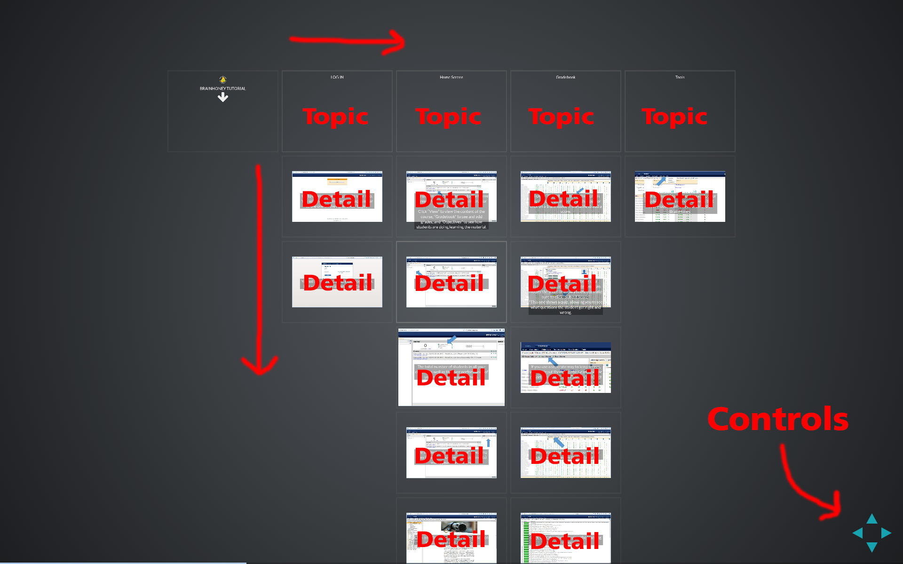

Canvas Tutorial
| Move left or right to select a topic | |
| Move up or down to view details |
Click the link to jump to:
More Links
Click the link to jump to:
Move down to view a tip!

Tip: Click in frame and push "Escape" to navigate whole presentation
Log-In/Dashboard
Once you log in through BYU’s CAS, this page will appear. It is the home page and where you will see any and all courses assigned to you. In this case, POLI 101 is the only course I am a part of. To access that specific course, click on the box shown on the homepage.
From your main dashboard, clicking on the POLI 101 Tab will bring you to the home page for that specific course.
On the far right, you can add a new announcement that will be made available to all students and sent to their emails (depending on their notification settings).
To-Do List
On the dashboard, there is a section titled “To-Do”. Canvas automatically creates a To-Do List for you with all of your upcoming assignments. It gives you a quick view of upcoming course activities that you have not yet completed.
Each item is coordinated according to the course and displays an icon for each activity type: discussion, quiz, or assignment. To-Do list items are organized by due date.
When you click on a To-Do List item, it will take you to the item’s corresponding page.
Customize Navigation
Click the Courses link, then click the All Courses link.
To favorite a course, click the star next to a course. Courses with yellow stars show that the course is a favorite.
Depending on course configuration, some favorited courses may still display the favorite icon even after the course has ended. If a past enrollment course shows the favorite icon, uses can favorite the course by toggling the star icon.
Assignments
This shows all assignments you have made for the class.
Using the little dots next to each title, you can rearrange the order. On the right hand side are some very basic details for each assignment.
Above that is the option to create another assignment.
This slide shows the detailed information for a specific assignment.
You can edit and publish the assignment by clicking on the corresponding tabs on the top right hand side of the page.
Providing Feedback for Students
When grading assignments, you are given several different options for providing feedback. In the section titled, “Add a Comment”, you can enter text, attach a file, or record a video or audio comment by clicking on the media icon. When you are finished, click “Submit Comment”.
Assignment comments are all organized chronologically. Older comments will appear at the top, and your most recent comments will appear at the bottom. After you submit your comment, double check to make sure your assignment comment appears on the screen for the student to see.
Discussions
Here you can see all discussions you have done with the class. Remember, these are attached as assignments and are similar to Digital Dialog in Learning Suite.
This area is similar to the Digital Dialog section of Learning Suite. Here, students, TAs, and instructors can communicate as a class for specific assignments.
Grades
Clicking on the “Grades” tab will show your gradebook. It shows you the overall percentage for each student and allows you to export the grades to a separate file if you would like.
Hover over a grade and click the upper rightmost corner to make the box shown in the slide appear.
Here you can update a grade (make the change, then click “Update Grade.”) and add assignment-specific comments (make sure to click “Post Comment.”).
For each assignment, you can set one or more options:
- Assignment Details
- SpeedGrader
- Message Student
- Set Default Grade
- Curve Grades
- Mute Assignment
Speed Grader
SpeedGrader allows you to view photo and video submission, listen to audio submission, grade using a simple point scale or a complex rubric, make comments using video, audio, and text on student assignments, hide student names while grading, and add coments with crocodoc.
There is also a SpeedGrader app with all the same functions of the desktop version. This will allow you to grade assignments on the go with your smart phone or tablet.
People
Click on the people tab to see all students, their section, their role, the last time they logged in, and how much time they have spent on the course.
Add new people to your course by clicking on the “+ People” button.
Click on an individual student to see their information and any recent messages sent between the two of you.
Pages
"Pages" will to view any pages you have created for your class. Clicking the blue “+ Page” button will create a new page. For students to view the page, make sure that the cloud icon to the right of “Last Edit” is green with a checkmark for each assignment. Clicking on the cloud will allow you to make the changes.
Click on each page to see what that page looks like to each student. Here you can publish and edit the page as well.
Clicking on “Edit” will cause the page to appear as shown. You can modify your page any way you would like, and can add links, pictures, videos, and other media as well to your page.
Make sure to click “Save” after making any changes.
Files
Here you can upload files for all your students to see. These can be the presentations from the Conferences or a separate file.
Clicking on one of the files will bring it up as shown in the slide. Students can download the file, make it full screen, or zoom in and out.
Syllabus and Learning Outcomes
In the “Syllabus” tab, your students will see all upcoming assignments. Click “Edit Syllabus Description” on the right hand side of the page to edit your syllabus and the description for it.
Here you can add class outcomes/goals for your students.
Quizzes
Clicking on the quiz tab will show you any quizzes you have created for the class. The cloud to the right on each quiz should be green with a checkmark if it is published and available to the class. Create a new quiz by clicking “+ Quiz” on the top right of the page.
When going in to edit or create a quiz, this is what the page will look like. You can adjust settings, add or modify questions, and control the settings for the quizzes.
Scrolling down the Quiz Edit page, you can add further restrictions and settings to the quizzes, as well as put in when the quiz is due.
This is where you can see the preview of what your quiz will look like to the students. Note: In the settings, you can dictate whether to show all the quiz questions at once or whether you’d like it to show one at a time.
Conferences
This tab will show all available and concluded conferences. A conference is similar to a Webinar and allows you to give a presentation and see your students while they see you. It is basically an online classroom.
When you click on a specific conference, this screen will appear. The first box asks how you’d like to connect with audio.
After deciding how to connect your audio, this homepage will appear. On the left is a list of all current users. In the middle of the screen is the area for you to present. You can upload your own slideshow here for the whole class to see. On the right hand side of the page is an area where you and all of the students can chat.
Clicking on the little webcam tab on the top left hand corner will bring up the box shown in the slide. Another box titled “Adobe Flash Player Settings” may appear; click allow.
Your video feed should now appear in the box on the screen. Make sure to click “Start Sharing;” otherwise students will not see you.
Once you have clicked “Start Sharing,” the screen will appear as it did before, only now your video feed is in the lower left hand corner for all users to see.
To add a new slideshow:
- Click on the little paper with a plus icon located on the bottom left hand side of the presentation box in the middle of the screen (to the right of your video box).
The box shown on screen will appear and allows you to select any file you would like to share with the class.
- Click upload after selecting your document and it will appear in the presentation section of the conference homepage.
Other Tools: (Collaboration, Chat, Attendance, Notes)
This is great for creating documents (like Google Docs) that all students can edit and work on together.
In this tab, you can communicate with the entire class in real-time, and they can respond. This is different from the “Discussion” tab in that chats are not tied to any assignments. It will also show how many students are on at a set time to chat.
Here you can take attendance if you have any in-class meetings. By hovering over the grey circle between the student’s picture and their name, you can mark them as present, absent, or late.
Using an Office 365 account and Microsoft OneNote, you can post class notes for students to view.
Settings
Click on the Settings tab to bring up the following screen. Here you can edit details for each of your courses. On the right hand side of the page are options, one of which is “Student View.” Click this to see how the course looks to your students.
Scroll down the page to see more settings for the course.
This is how the course looks to your students. There will be a pink box around the page when you are in Student View. The “Reset Student” button will clear all history for the student and make them a brand new student in your course. Click “Leave Student View” to return to Instructor View.
Calendar
Here you will see the assignments due on a calendar. Once the deadline has passed, the title of the assignment will be crossed out.
Once in the “Calendar” tab, you can click the “+” tab on the top right hand side to create a new event. The box shown in the slide will appear and enable you to add a new event.
Inbox
This area is different from the Discussion and Chat areas, and is only viewable to you and the specific student(s) you send a message to. This is very similar to an email account. The buttons on the top right of the screen are as followed (in order from left to right):
- Create new email
- Reply
- Reply all
- Archive
- Delete
- Settings
Mobile App
When you log in to the Canvas app, the default landing page is the Courses page, or Dashboard. The Profile icon displays your profile information in the app as well as your user files. To view your profile, tap the Profile icon.
From your profile page you can:
- Choose a profile picture
- View your files
- View Canvas app settings
- Get Help with the Canvas app
- Log Out
The To-Do icon gives a quick view of upcoming course activities that have not yet been completed. Tapping an activity item takes you to its corresponding page, so you could complete an assignment directly.
The Calendar icon displays events and assignments for your courses and groups.
To view Notifications, tap the Notifications tab. Notifications gives you an overview of all course notifications such as changes to an assignment due date, newly created assignment, course announcement, or a reply to a subscribed discussion.
The Messages icon displays all Conversations messages in the Canvas app.